Objectives
This lab will focus on how to effectively clean data in excel using the available functions.
Dataset cleaning
Cleaning data is a very important task for a data analyst. There are some functions in Excel you can use to support this process.
Some data when imported into Excel brings with it old formatting from the source system, this may be as symbols, concatenation of strings or duplicate values. It is essential to prepare the data for analysis and thus limit the issues that may arise
The image below shows each piece of data has a symbol prefixing the actual value.
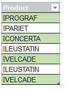
In this example it is important to strip off the leading paragraph symbol.
The Clean() function will remove any of the non-printable symbols that you may get in your data when it is imported from various sources.
Open the following file:
Using the clean() formula as below enter the formula into cell B14:
=clean(B4)Copy the formula down to B20, click the menu button that appears beside the copied cells and choose fill without formatting to ensure just the formula is copied and not the coloured cell format.
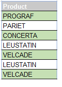
Text to columns
Another common data problem is the concatenation of strings with a delimiter or separator in between each value. This a simple text extract file which can drastically shrink file size of a data set but is impossible to work with in terms of data analysis.
In the worksheet highlight the data in cells J6:J11 and then on the data ribbon click the button Text to Columns.
This tool allows us to change text strings into separate columns easier to use. In this case each value is separated by a delimiter the underscore, choose the delimited option and click next.
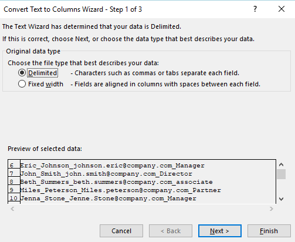
The default delimiter is the Tab and there are other options such as comma or semi colon. Check Other and type in an underscore.
The preview function is very useful to see if your data looks correct once separated.
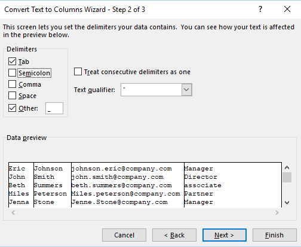
click finish (or click next and ensure the data types are set as expected).
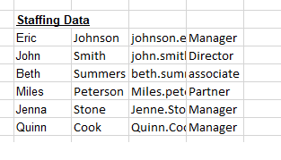
Trim
Open the sheet named Trim(), here we have rows of data that describe products. There are extra spaces between many of the letters and numbers in the data.
The trim function will strip extra spaces from text, leaving only single spaces between words and no space characters at the start or end of text.
=trim(B5)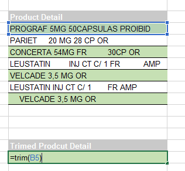
Hit enter. The contents should now show without extra spaces.
Drag down the formula so it is copied for each of the cells from B16 to B22
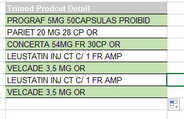
Substitute Values
It is also possible to use the trim function with the substitution function.
In this data there is a comma separating some of the numbers where we would prefer a decimal point. There are also the extra spaces to deal with.
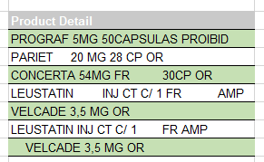
=TRIM(Substitute(B4,",","."))All text values must be in quotes so the comma is in quotes and the decimal point.
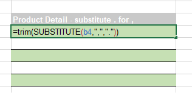
Copy the formula to the end of the data.
This task could of been done using the find and replace tool in excel however it is always best practice to keep the raw data in its original form. It allows you to look back at the original data to check, especially if you conduct a lot of clean up.
Investigate the use of Find and Replace command.
Values
Substitute
Using the substitute function again you will create a new list of data for the years 2015 2016.
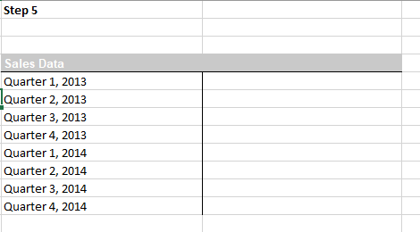
=substitute(G5,"2013","2015")This formula will work for the first four lines of data so copy it down, then edit the formula so that 2014 changes to 2016.
Text
The next issue in raw data is also common when pulling data from other sources and then combining the data in an excel sheet.
Open the Values sheet and you will see Excel marks with a green triangle each value in the table.
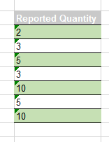
When you click on the cell the error sign pops up. By clicking on the arrow we can see that this number is actually stored as text.
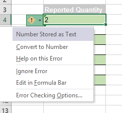
In the arrow menu we have a function to convert the cells to numbers one by one. If a number is stored as text we cannot use some of the most common functions such as sum, or average. Consequently, the sum function in cell B11 returns zero.
There are two methods for converting these values.
Using the value function:
=value(B4)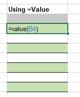
Copy the formula down and the errors have been removed and the values are now numbers. The sum function should now work.
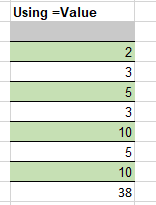
Using text to columns:
Select the raw data, click text to column from the data ribbon, choose delimited and click next. Uncheck Tab and other as we are only dealing with one piece of data. Click next. The text to columns function knows that the data is numeric. General converts numeric values to numbers, date values to dates and all remaining values to text. Choose the destination as our table below.
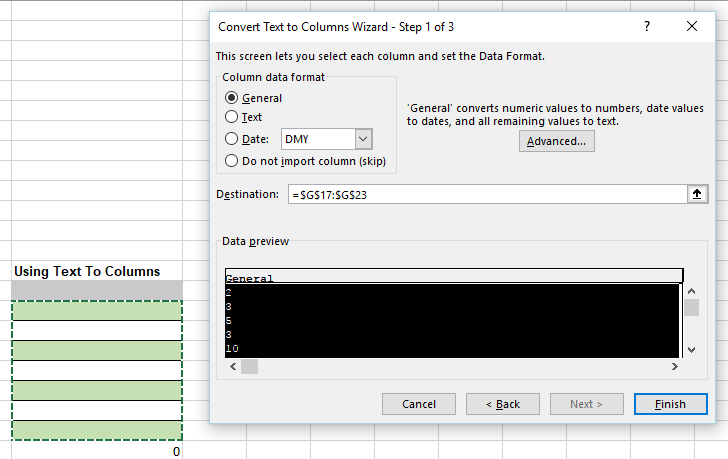
Now the values are numeric and the sum function works.
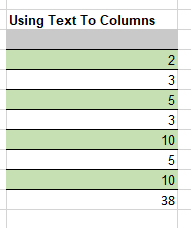
Sorting
Open the following file
In the worksheet ExtraRows, we’ve got some valuable information here. Within each department, for example, ADC we see a list of information about the people who work in that department. And scrolling up and down you can see over in column A how the data is indented and every time we have a new department, we've got a new list with a new heading. That heading does repeat the information that we see to the right.
- There are many rows with subheadings such as ADC or Admin training but have empty cells in the rest of the row. It would not be efficient to delete each row, there’s hundreds of them.
- To deal with this issue we could sort the data. Pick a column other than A (it has no empty cells) For example, Click in column C, choose the Sort button on Data ribbon.
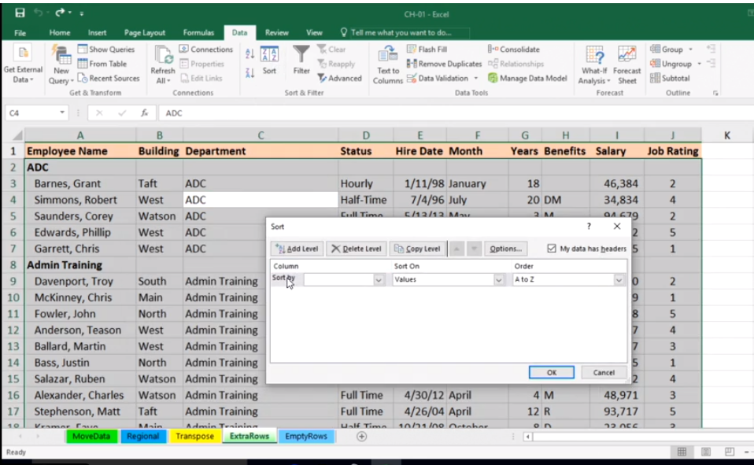
- If it asks then choose Expand selection. Then choose sort by Department in A to Z. Note, Excel recognises 'My data has headers' so row 1 does not get involved in the sort.

The titles if you investigate are at the bottom of the sheet. If you press Ctrl End you will see them, and delete them if you wish.
Dates
Open the following workbook:
There are some entries in column A, also in column C, that are similar, they're in reverse order. They've got month and year but not a day associated with them.
- In column E we've got all three of the date parts, but in a different layout. The key to converting these many times is a combination of using a function called DATE as displayed in this generic form here in cell B1 and also some of the text functions, like left and right, that allow us to extract data from the left side or right side of a cell.
See the format below:

- The key to converting these many times is a combination of using a function called DATE as displayed in this generic form here in cell B1 and also some of the text functions, like left and right, that allow us to extract data from the left side or right side of a cell.

In cell B2: =date ... link to the year out of cell A2. To access the four right-most characters, we use the function right. Cell A2 comma 4, meaning pull out those four right-most characters, that's the year.
Then we need the month, that's the two left-most characters. We're in cell A2 again comma two. Now there's no day over there, so let's simply make it be day one, first day of the month, comma one. Right parenthesis. We've got a date.
Copy/autofill this down the column.
We might also need something almost the same in column D. Since this formula we just created is based on the cell to its left, we can copy this formula we just created in column B. We’ve a different layout. So you can edit it as follows:

- In column E the date is formatted differently, it includes the 3 parts to the date. Notice J and K showing each month and sequence – this could be helpful here.
- To input a formula in F1 to format column E we could use a lookup table to somehow come up with the actual numbers. E.g., September is nine, the ninth month and so on. This is done inside out here. So in cell E2, how to get Sep to recognise as ‘9’.
- Use a function called Mid. ‘6’ represents the space where ‘S’ for Sep starts in cell E2. ‘3’ represents the 3 characters – ‘Sep’. Hit enter, that will give us ‘Sep’ in cell F2.

- To replace the ‘Sep’ with ‘9’, we use the Vlookup function. The purpose of the Vlookup is: I've got a value somewhere, in other words for Sep…I want to compare it with a table of data somewhere. That table in this example is over in columns J and K. See function format below:

Start with: {{{ =VLOOKUP(MID(E2,6,3),J:K,2,FALSE) }}}
The ‘2’ means the second column which is ‘K’ and ‘FALSE’ means – choosing exact match. If all goes well, it should have ‘9’ as the answer. Convert this to Number – general format from home ribbon. Just to test this in column ‘F’, autofill down this column ‘F’ to see if it picked up the month as the numerical field:

- All that, to come up with a month!! To format the Date in column E – edit the formula as follows:

- At different times your going to have to go to these unusual lengths to achieve Date formatting:

- To clean up the columns, we won’t want the original column now that we have reformatted. To quickly copy, bring your mouse to any edge of column F, hold it, begin to move it to next column, click right button of mouse to choose option with copying.